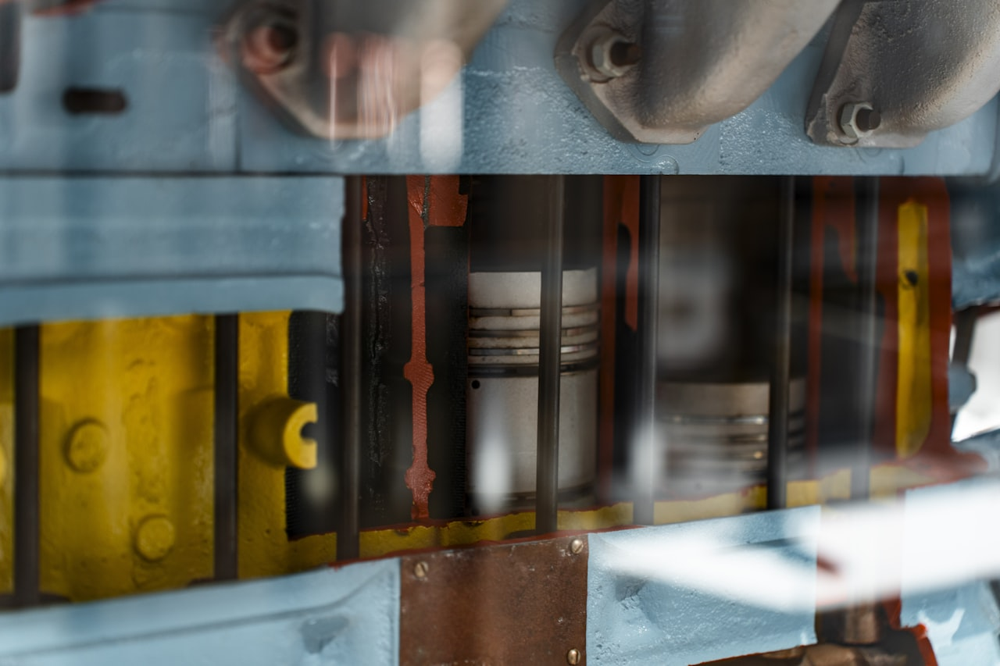

인장 시험
항복·인장 강도, 연신율 측정. KS B 0801/0802 · ISO 6892 · ASTM E8 대응.

OVERVIEW · 개요
금속·플라스틱·복합재의 인장·압축·굽힘 강도와 경도를 KS·ISO·ASTM 규격으로 시험합니다. 고정밀 로드셀과 정밀 변위 측정으로 재료 물성을 데이터화합니다.
TEST · 시험 종류
항복·인장 강도, 연신율 측정. KS B 0801/0802 · ISO 6892 · ASTM E8 대응.
압축 강도, 3점·4점 굽힘 시험으로 소재·부품 강성을 평가합니다.
로크웰·브리넬·비커스 경도계로 표면 경도를 측정합니다.
FEATURES · 주요 특징
고정밀 로드셀로 하중 오차 ±0.5% 이내를 보증합니다.
KS·ISO·ASTM 시험법을 프리셋으로 제공, 자동 계산·판정.
접촉·비접촉 신율계로 연신율을 정밀 측정합니다.
시편·소재 형상에 맞춘 그립·지그를 함께 제공합니다.
SPECIFICATION · 상세 사양
| 항목 | 규격 |
|---|---|
| 시험 용량 | 5 kN ~ 600 kN (모델별) |
| 정밀도 등급 | Class 0.5 (하중 ±0.5%) |
| 변위 분해능 | 0.001 mm |
| 대응 규격 | KS B 0801/0802, ISO 6892, ASTM E8/E9 |
| 제어·기록 | PC 소프트웨어 · 응력-변형 곡선 · 자동 판정 |
| 제공 범위 | 본체 · 그립/지그 · 신율계 · 소프트웨어 · 교정 |
PROCESS · 시험 절차
시험 종류·용량·규격을 검토합니다.
용량·그립·신율계 등 사양을 구성합니다.
설치 후 하중·변위를 교정합니다.
시험 데이터와 성적서를 제공합니다.
FAQ · 자주 묻는 질문
CONTACT
시험 종류·용량·규격을 알려주시면 최적 시험기를 제안·회신드립니다.